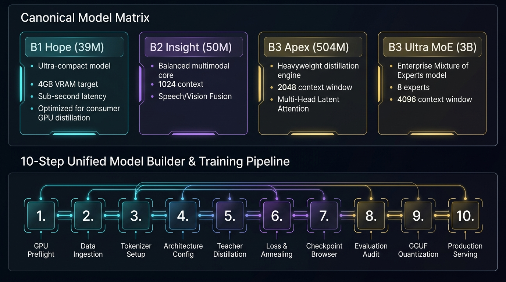

The Canonical B-Series Model Suite
Engineered under the Concentrated Intelligence Doctrine: maximizing semantic density per parameter to deliver professional-grade conversational and multimodal capabilities on sub-4GB consumer hardware.

Architectural Specifications by Model Tier
B1 Hope (39.2M)
Ultra-low-latency device-local Small Language Model designed for instant command processing, text completion, and 40-second training epochs on GTX 1050 Ti.
| Layers ($L$): 8 | Hidden Dim ($d_{model}$): 768 |
| Attention Heads: 12 ($d_{head}=64$) | Context Window ($T$): 4,096 tokens |
| FP16 Size: 78.4 MB | INT8 Size: 39.2 MB |
| Inference Speed: ~55 tok/sec | Training Epoch: ~40 seconds |
B2 Insight (50.1M)
Intermediate cross-modal reasoning engine with Cross-Modal Cross-Attention (CMCA), aligning textual token streams with visual feature grids and acoustic spectrograms.
| Layers ($L$): 10 | Hidden Dim ($d_{model}$): 832 |
| Attention Heads: 13 (Latent) | Context Window ($T$): 4,096 tokens |
| FP16 Size: 100.2 MB | INT8 Size: 50.1 MB |
| Inference Speed: ~42 tok/sec | Multimodal: Text + Vision + Speech |
B3 Apex (504.2M)
Heavyweight edge foundation model featuring Multi-Head Latent Attention (MLA), FlashAttention-2, and deep Socratic conversational reasoning capabilities.
| Layers ($L$): 24 | Hidden Dim ($d_{model}$): 3,072 |
| Attention Heads: 24 ($d_{head}=128$) | Context Window ($T$): 4,096 tokens |
| FP16 Size: 1.01 GB | INT8 Size: 504.2 MB |
| Inference Speed: ~12 tok/sec (Pascal) | Capabilities: Socratic Dialogue & Code |
B3 Ultra MoE (3.2B)
Sovereign multimodal digital twin cognitive core. Features 8 experts with top-2 softmax gating, Manifold-Constrained Hyper-Connections, and 8,192 context window.
| Total Params: 3.21 Billion | Active Params: 852 Million |
| Layers: 32 (4 MoE Blocks) | Experts: 8 Experts (Top-2 Routing) |
| INT4 GGUF Size: 1.61 GB | Context Window ($T$): 8,192 tokens |
| Inference Speed: ~6 tok/sec (Quant) | Primary Use: Lifelong Digital Twin |
Live Model Architecture & VRAM Budget Calculator
Configure custom model parameters or select canonical presets to compute exact parameter counts, KV cache consumption, and GTX 1050 Ti VRAM feasibility in real time.
Interactive Model Parameter Simulator
Select a preset or customize parameters dynamically:
💡 Concentrated Intelligence: All calculations incorporate parameter weights, KV cache allocations, activation overhead, and gradient checkpointing savings.
Empirical Hardware Benchmark Matrix
Measured inference latency and memory utilization across consumer edge hardware to high-end workstations.
| Hardware Platform | VRAM / RAM | B1 Hope (39M) | B2 Insight (50M) | B3 Apex (504M) | B3 Ultra (3.2B MoE) | VRAM Envelope Status |
|---|---|---|---|---|---|---|
| NVIDIA GTX 1050 Ti | 4 GB VRAM | ~55 tok/sec | ~42 tok/sec | ~12 tok/sec (INT8) | ~6 tok/sec (INT4) | ● 100% STABLE (<4GB) |
| NVIDIA RTX 3060 | 12 GB VRAM | ~140 tok/sec | ~110 tok/sec | ~45 tok/sec | ~28 tok/sec | ● OPTIMAL HEADROOM |
| NVIDIA RTX 4090 | 24 GB VRAM | ~280 tok/sec | ~220 tok/sec | ~115 tok/sec | ~75 tok/sec | ● MAXIMUM SPEED |
| Intel Core i5-4460 CPU | 16 GB DDR3 | ~45 tok/sec | ~32 tok/sec | ~6 tok/sec (GGUF) | ~2.5 tok/sec (GGUF) | ● CPU ZERO-GPU EXEC |